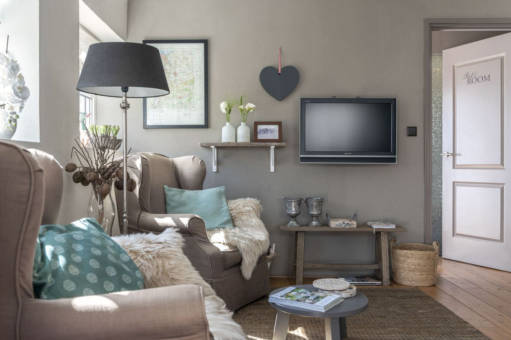
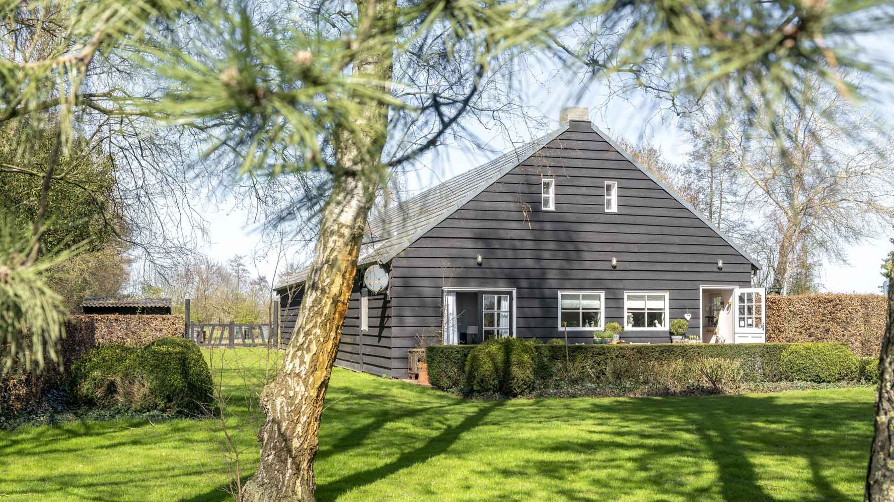
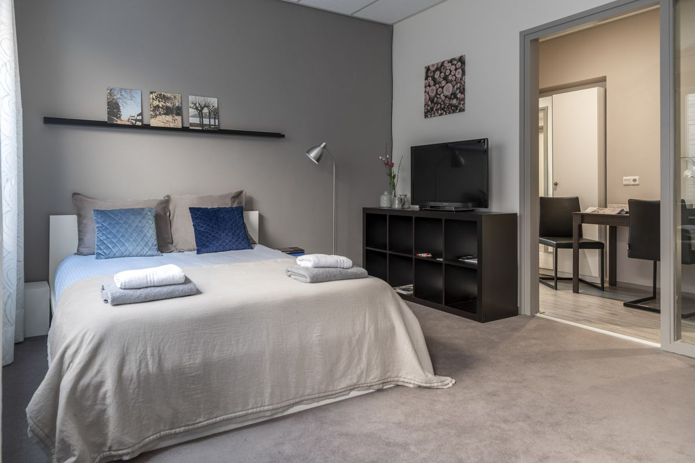
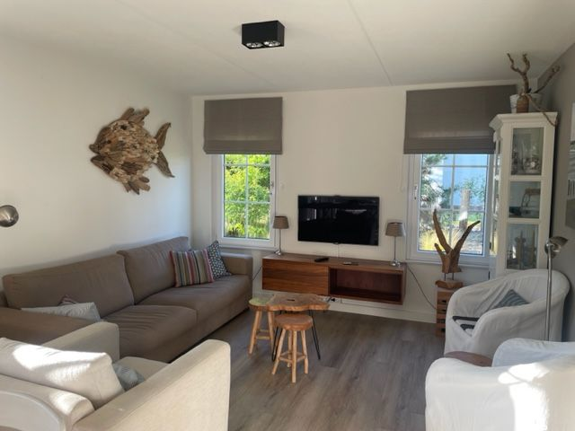
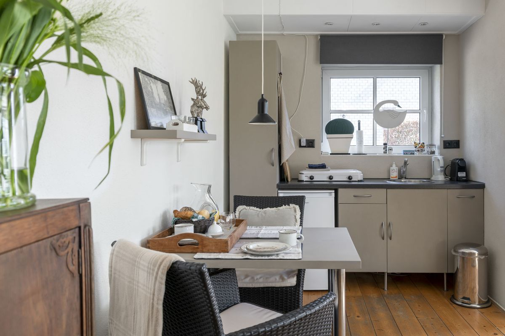
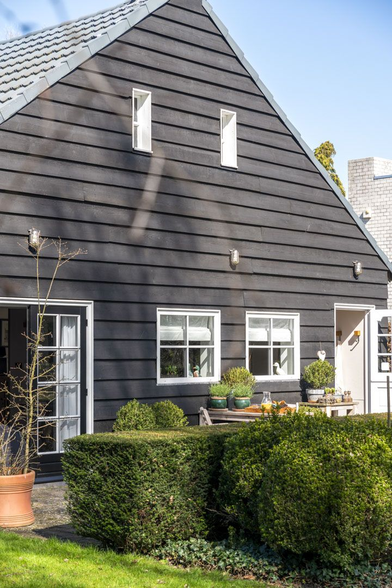
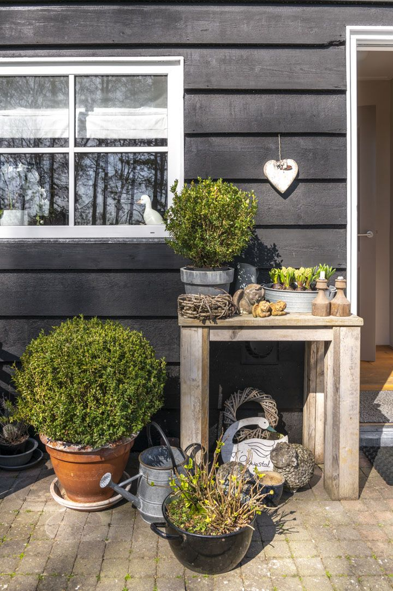
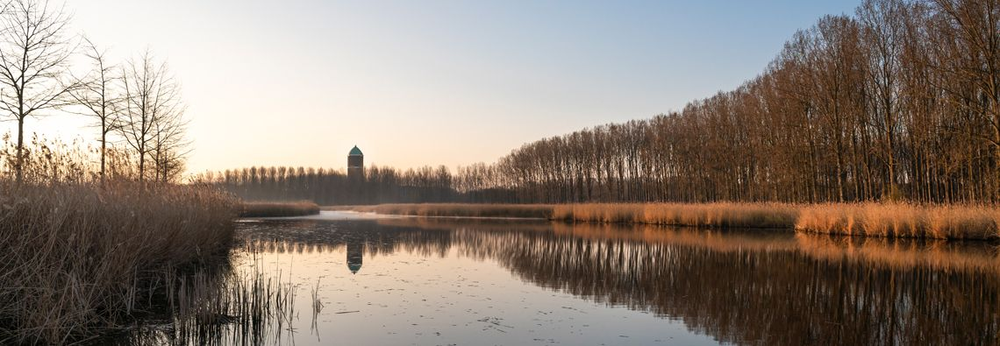

d'Ouwe Stal
B&B · 2 pers. · buitengebied Axel
Een vrijstaand huisje van 35 m² met eigen ingang, terras en openslaande tuindeuren in de slaapkamer. Ontbijt inbegrepen.
€ 150 p.n. incl. ontbijtMeer info

Rust, ruimte en privacy in de oude paardenstal, met 's ochtends een Zeeuws ontbijt. Midden in de polders van Zeeuws-Vlaanderen, en toch binnen het uur in Gent, Brugge of aan het strand van Cadzand.
Landelijk in de B&B, zelfstandig in hartje Axel, of met het hele gezin aan de kust.

B&B · 2 pers. · buitengebied Axel
Een vrijstaand huisje van 35 m² met eigen ingang, terras en openslaande tuindeuren in de slaapkamer. Ontbijt inbegrepen.

Studio · 1-2 pers. · hartje Axel
Een volledig ingerichte studio met keuken, eethoek en een eigen patio. Fijn voor een paar nachten, of langer voor werk of stage.

Vakantiehuis · Cadzand
Een vrijstaand huis vlak achter de duinen, met een grote omheinde tuin. Het strand ligt op loopafstand.
Prijzen per nacht inclusief btw. Toeristenbelasting € 1,89 per persoon per nacht.
Bekijk alle verblijven en wat erbij zit
Na een goede nachtrust staat er een kakelvers Zeeuws ontbijt voor je klaar. In De Kluis boek je het ontbijt erbij als je dat wilt.
Voor een avond uit werken we samen met restaurant 't Vlasbloemeken in Koewacht, sinds 2011 bekroond met een Michelinster. We brengen je vanuit d'Ouwe Stal naar Koewacht en aan het eind van de avond weer veilig thuis. Zo geniet je zorgeloos van je diner en de bijpassende wijnen.


Op die plek vind je nu onze B&B: een knus, landelijk ingericht huisje met eigen ingang en volop privacy. Je zit in een comfortabele fauteuil of op je zonnige terras met een drankje, en 's ochtends word je wakker met vogelgekwetter door de openslaande tuindeuren.
De B&B ligt in het buitengebied, op nog geen 5 kilometer van Axel.
Tussen de Westerschelde en de Belgische grens, in ons 'Landje Apart'.

Het bourgondische Axel en vestingstad Hulst, met een gezellig centrum en goede restaurants.
Het grootste brakwaterschor van Europa. Ga mee op een sportieve excursie.
Polders, natuurgebieden en water. Met GR-wandelroutes, een 18-holesgolfbaan, zweefvliegen en indoorskiën.
Antwerpen, Gent, Brugge, Sluis, Middelburg en Veere, of de zeelucht op het strand bij Cadzand.
Uit ons gastenboek.
"Een bijzonder knus huisje waar we 's avonds heerlijk konden zitten terwijl de kinderen in de campingbedjes op de slaapkamer sliepen. De boxspring lag comfortabel. Heerlijk ontbijt en we genoten van de gastvrijheid van Mia en Bram."
Martijn, Nicole, Jens & LarsEtten · gastenboek"Het is John en mij erg bevallen. Jammer dat het maar voor 1 nacht was! Alles in Douwe Stal is perfect geweest en je hebt ons nog wel gehaald en gebracht. Verwennen heet dat."
Arthur en JohnSan Fransisco, Californië · gastenboek"D'Ouwe Stal, wat een prachtig plekje in het mooie Zeeuws-Vlaamse landschap. Een heerlijk, comfortabel, gezellig huisje met een zeer verzorgd en lekker ontbijt."
Jan en Joke KoopmangastenboekGeef je data en je verblijf door, dan laten we zo snel mogelijk weten of het vrij is. Na onze bevestiging is je reservering definitief.
Bel of mail ons gerust, ook als je eerst een vraag hebt.